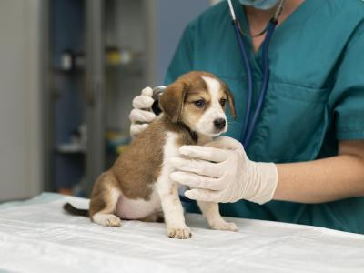
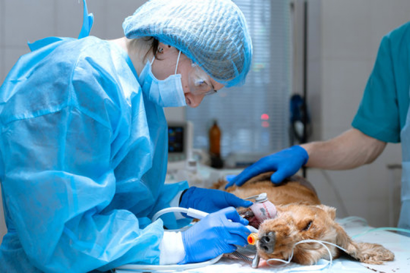
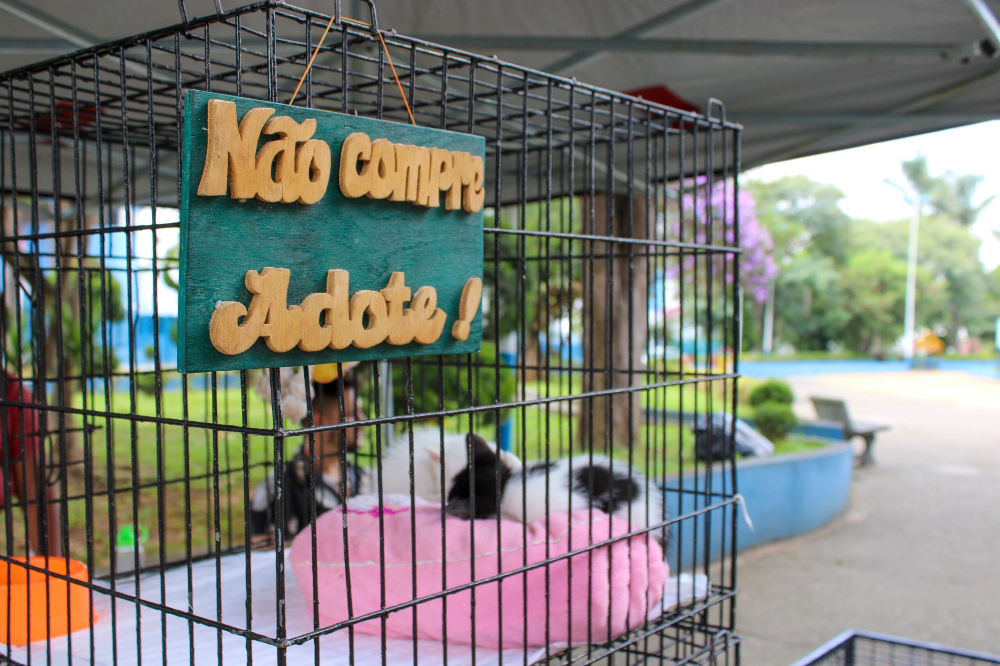
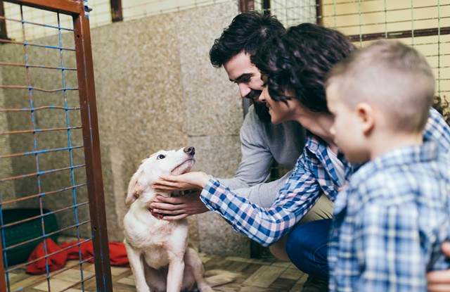
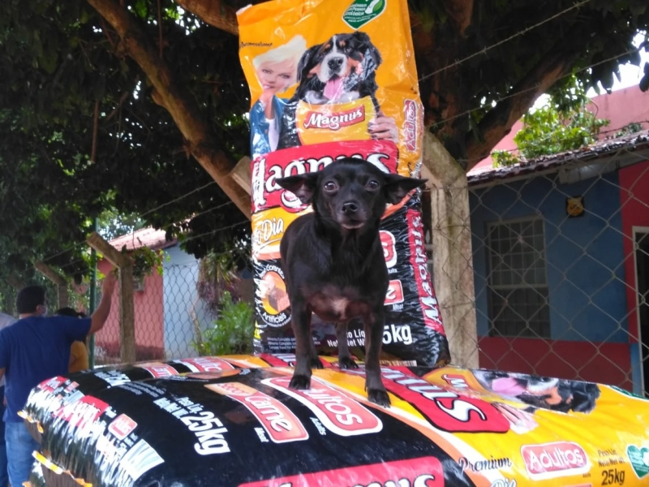

Atendimento Emergencial
Resgates e primeiros socorros.
O projeto de resgate da ONG Esperança tem como objetivo retirar animais de situações de perigo, garantir atendimento veterinário imediato e promover sua recuperação física e emocional, até que estejam prontos para adoção responsável.

Resgates e primeiros socorros.

Consultas, cirurgia e medicação.
Promovemos eventos e feiras de adoção responsável, onde animais resgatados têm a chance de encontrar famílias amorosas. Também acompanhamos cada processo de adoção para garantir o bem-estar e a adaptação de todos.

Eventos presenciais e digitais para conectar lares e animais.

Depoimentos de famílias que adotaram e transformaram vidas.

Campanhas de arrecadação de ração, produtos e recursos para apoiar os animais resgatados